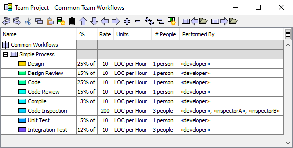
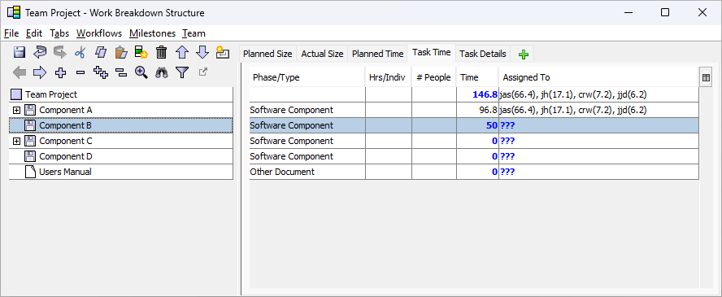
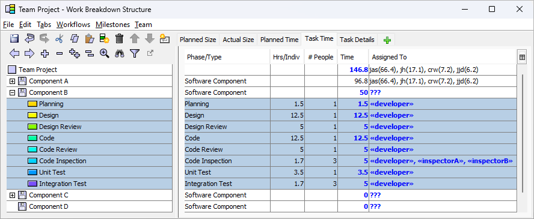

and the following WBS:

If you were to highlight Component B and choose Simple Process from the Workflow menu, it would produce the following WBS:

If you make a mistake (for example, inserting the workflow under
the wrong WBS item), you can always undo it using the undo button
( ).
).
It is important to note that the items inserted into your WBS via this method are copies of the items in the defined process or workflow. As a result, you can freely edit the inserted items (for example, deleting steps that are unnecessary for the current situation) without affecting the process/workflow definition. This also means, however, that if you use the Common Team Workflows Editor to alter the definition of a process/workflow later, those changes will not be propagated into the team's WBS. For example, if you were to open the Common Team Workflows Editor and delete the Planning step from the definition of the "Simple Process" workflow, that change would not affect the list of tasks under Component B. It would continue to include a Planning step.